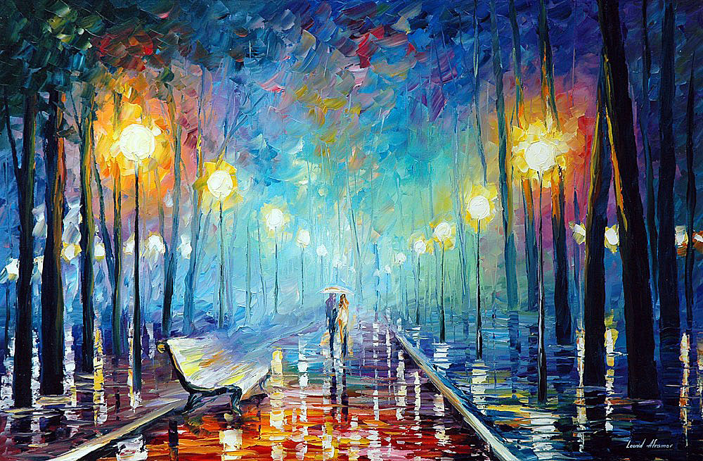

Gerhardt.
- Art | Tech | Story -

Me
Atlanta based television and film editor with interests in machine learning and artificial intelligence. Two years of on set film production experience, ten years of film post-production experience, former managing partner of a post-production house , occasional photographer, lifelong storyteller, and lover of the natural world.
Never be satisfied. Never stop learning. Leave no stone unturned.
My Skills
Creative Editorial
Video Production
Software Engineering
My Motion
Selectetd works - creative editorial by Gerhardt
My VR
VR content: a recreation of Misty Night Park by Leonid Afremov in A-Frame



My Still
Selected photographs from my travels.


Contact Me
Let's get in touch. Send me a message: